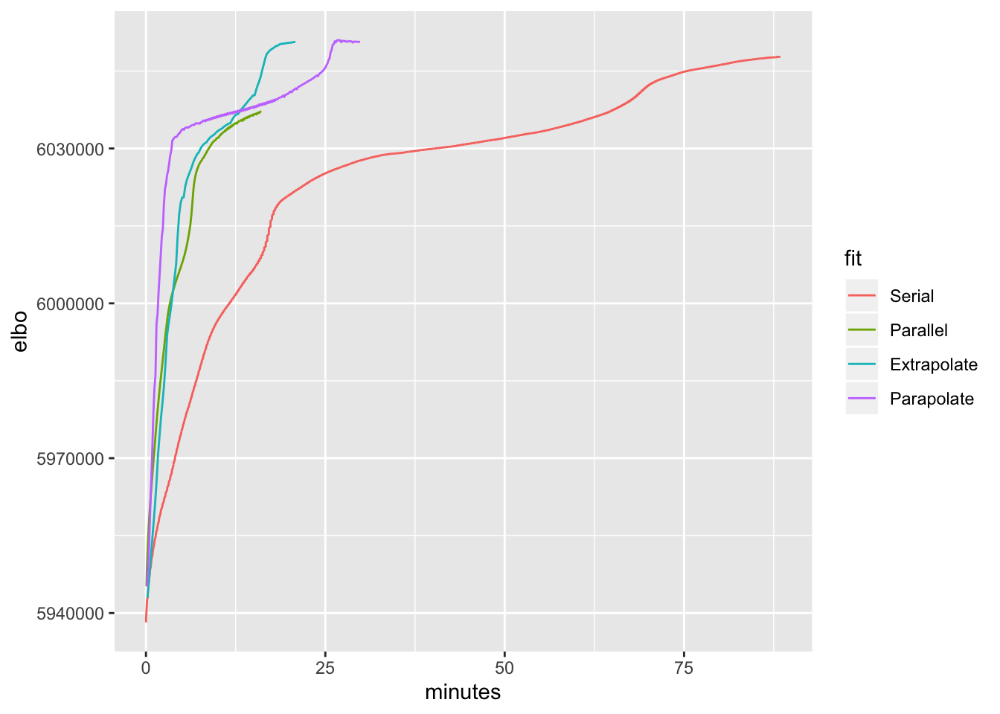
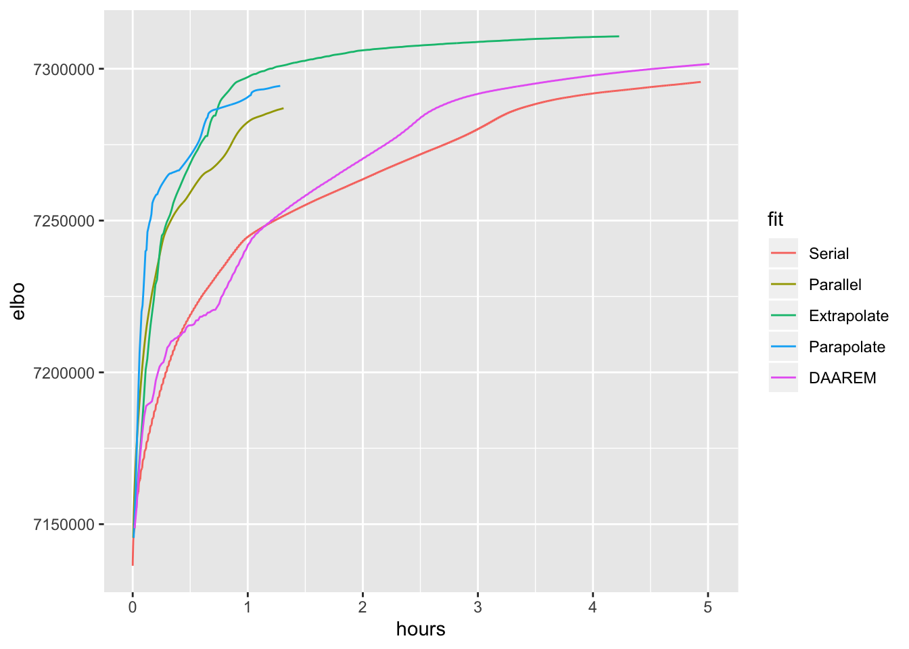

Last updated: 2019-07-23
Checks: 6 0
Knit directory: FLASHvestigations/
This reproducible R Markdown analysis was created with workflowr (version 1.2.0). The Report tab describes the reproducibility checks that were applied when the results were created. The Past versions tab lists the development history.
Great! Since the R Markdown file has been committed to the Git repository, you know the exact version of the code that produced these results.
Great job! The global environment was empty. Objects defined in the global environment can affect the analysis in your R Markdown file in unknown ways. For reproduciblity it’s best to always run the code in an empty environment.
The command set.seed(20180714) was run prior to running the code in the R Markdown file. Setting a seed ensures that any results that rely on randomness, e.g. subsampling or permutations, are reproducible.
Great job! Recording the operating system, R version, and package versions is critical for reproducibility.
Nice! There were no cached chunks for this analysis, so you can be confident that you successfully produced the results during this run.
Great! You are using Git for version control. Tracking code development and connecting the code version to the results is critical for reproducibility. The version displayed above was the version of the Git repository at the time these results were generated.
Note that you need to be careful to ensure that all relevant files for the analysis have been committed to Git prior to generating the results (you can use wflow_publish or wflow_git_commit). workflowr only checks the R Markdown file, but you know if there are other scripts or data files that it depends on. Below is the status of the Git repository when the results were generated:
Ignored files:
Ignored: .DS_Store
Ignored: .Rhistory
Ignored: .Rproj.user/
Ignored: analysis/.DS_Store
Ignored: code/.DS_Store
Ignored: code/flashier_bench/.DS_Store
Ignored: data/flashier_bench/
Untracked files:
Untracked: code/extrapolate/extrapolate_trachea_ash100.R
Untracked: code/extrapolate/extrapolate_trachea_pn40.R
Untracked: output/extrapolate/
Unstaged changes:
Modified: code/extrapolate/extrapolate.R
Deleted: code/extrapolate/extrapolate_trachea.R
Deleted: code/extrapolate/extrapolate_trachea_ash.R
Note that any generated files, e.g. HTML, png, CSS, etc., are not included in this status report because it is ok for generated content to have uncommitted changes.
These are the previous versions of the R Markdown and HTML files. If you’ve configured a remote Git repository (see ?wflow_git_remote), click on the hyperlinks in the table below to view them.
| File | Version | Author | Date | Message |
|---|---|---|---|---|
| Rmd | de0c5e2 | Jason Willwerscheid | 2019-07-23 | wflow_publish(“analysis/extrapolate.Rmd”) |
Some simple acceleration schemes that I’ve experimented with have turned out to be surprisingly effective for speeding up FLASH backfits. The inspiration is by way of Ang and Gillis (2019), but the idea is very simple.
Denote the set of optimization parameters as \(\theta\) and let \(\theta^{(k)}\) denote the values of the parameters after \(k\) iterations. Let \(g\) be the usual FLASH update function, so that \[\theta^{(k + 1)} = g(\theta^{(k)})\] (In flashier, this corresponds to an update to the row loadings, either serially or in parallel, then an update to the column loadings, then an update to the variance parameter tau.) The updates will become smaller and smaller as the algorithm nears convergence, but they will, I think, usually be in the same direction from iteration to iteration. To try to speed things up, I nudge the parameters a bit farther in the direction of the previous update by setting \[\tilde{\theta}^{(k)} = \theta^{(k)} + \beta_k (\theta^{(k)} - \theta^{(k - 1)})\] (where \(\beta_k\) parametrizes something like momentum) and then do the update by setting \[\theta^{(k + 1)} = g(\tilde{\theta}^{(k)})\] If the objective increases as a result of the update (that is, if \(f(\theta^{(k + 1)}) > f(\theta^{(k)})\)), then I congratulate myself on the success of the scheme and set \(\beta_{k + 1} > \beta_k\) to try to hasten convergence even more. If the objective decreases, then I backtrack, do a standard update by setting \[\theta^{(k + 1)} = g(\theta^{(k)}),\] and set \(\beta_{k + 1} < \beta_k\) so that the next attempt at extrapolation is more cautious. I think of the objective surface as a racetrack: I’d like to accelerate on the straightaways and brake around the curves. (The difference is that I’m racing blind and don’t know whether I’ve hit a curve until after I’ve gone off the track!)
I’ve tested extrapolation with both serial and parallel updates. I’ve found that parallel updates fare better if one alternates updates using extrapolation with standard updates: \[\begin{aligned} \theta^{(k + 1)} &= g(\theta^{(k)}) \\ \theta^{(k + 2)} &= g(\theta^{(k + 1)} + \beta_{k + 1}(\theta^{(k + 1)} - \theta^{(k)})) \\ \theta^{(k + 3)} &= g(\theta^{(k + 2)}) \\ \theta^{(k + 4)} &= g(\theta^{(k + 3)} + \beta_{k + 3}(\theta^{(k + 3)} - \theta^{(k + 2)})) \end{aligned}\] and so on. I imagine that this scheme works better because parallel updates are fairly erratic and become too unstable if extrapolation is used at every step.
I experiment on the droplet-based 3’ scRNA-seq dataset from Montoro et al. (described here). After greedily adding a number of factors, I perform backfits using serial and parallel updates, both with and without acceleration.
I run two experiments. In the first case, I fit 40 factors using point-normal priors. In the second, I fit 100 factors using scale-mixture-of-normal priors. All parallel backfits are done using 8 cores; my previous experience suggests that any additional speedup provided by using more cores would be negligible.
library(ggplot2)
trachea.res <- readRDS("./output/extrapolate/trachea_pnres.rds")
trachea.res$minutes <- trachea.res$elapsed.time / 60
ggplot(trachea.res, aes(x = minutes, y = elbo, color = fit)) + geom_line() 
The accelerated parallel method does better early on, but the accelerated serial method does better in the late game. Parallel updates with no acceleration also do well, but fizzle out too early.
These results suggest that it might be best to do parallel updates with acceleration for a small number of iterations before switching to serial updates (with acceleration).
library(ggplot2)
trachea.res <- readRDS("./output/extrapolate/trachea_ashres.rds")
trachea.res$hours <- trachea.res$elapsed.time / 3600
ggplot(trachea.res, aes(x = hours, y = elbo, color = fit)) + geom_line() 
Here I set the maximum number of iterations to 300. All methods hit the maximum before terminating. Results are otherwise similar to the above.
R package versions used are those that appear in the session information below (“other attached packages”).
sessionInfo()#> R version 3.5.3 (2019-03-11)
#> Platform: x86_64-apple-darwin15.6.0 (64-bit)
#> Running under: macOS Mojave 10.14.5
#>
#> Matrix products: default
#> BLAS: /Library/Frameworks/R.framework/Versions/3.5/Resources/lib/libRblas.0.dylib
#> LAPACK: /Library/Frameworks/R.framework/Versions/3.5/Resources/lib/libRlapack.dylib
#>
#> locale:
#> [1] en_US.UTF-8/en_US.UTF-8/en_US.UTF-8/C/en_US.UTF-8/en_US.UTF-8
#>
#> attached base packages:
#> [1] stats graphics grDevices utils datasets methods base
#>
#> other attached packages:
#> [1] ggplot2_3.2.0 mixsqp_0.1-119 ashr_2.2-38 ebnm_0.1-24
#> [5] flashier_0.1.10
#>
#> loaded via a namespace (and not attached):
#> [1] Rcpp_1.0.1 pillar_1.3.1 compiler_3.5.3
#> [4] git2r_0.25.2 workflowr_1.2.0 iterators_1.0.10
#> [7] tools_3.5.3 digest_0.6.18 tibble_2.1.1
#> [10] evaluate_0.13 gtable_0.3.0 lattice_0.20-38
#> [13] pkgconfig_2.0.2 rlang_0.3.1 Matrix_1.2-15
#> [16] foreach_1.4.4 yaml_2.2.0 parallel_3.5.3
#> [19] xfun_0.6 withr_2.1.2 dplyr_0.8.0.1
#> [22] stringr_1.4.0 knitr_1.22 fs_1.2.7
#> [25] tidyselect_0.2.5 rprojroot_1.3-2 grid_3.5.3
#> [28] glue_1.3.1 R6_2.4.0 rmarkdown_1.12
#> [31] purrr_0.3.2 magrittr_1.5 whisker_0.3-2
#> [34] backports_1.1.3 scales_1.0.0 codetools_0.2-16
#> [37] htmltools_0.3.6 MASS_7.3-51.1 assertthat_0.2.1
#> [40] colorspace_1.4-1 labeling_0.3 stringi_1.4.3
#> [43] lazyeval_0.2.2 doParallel_1.0.14 pscl_1.5.2
#> [46] munsell_0.5.0 truncnorm_1.0-8 SQUAREM_2017.10-1
#> [49] crayon_1.3.4